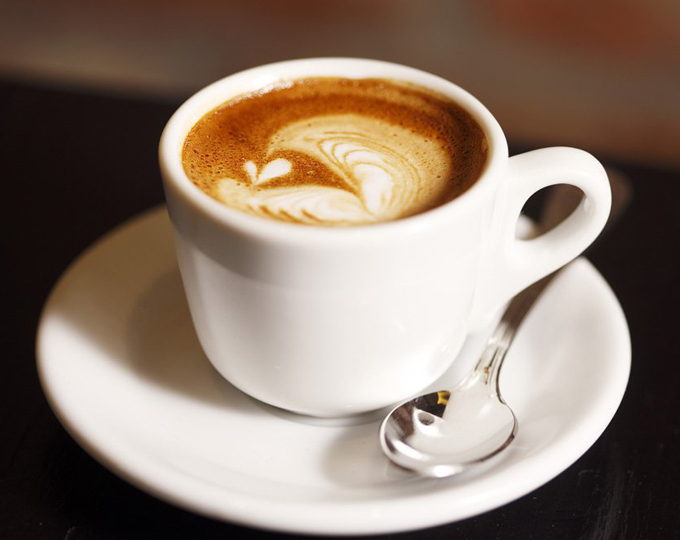

홈 > 브랜드 매거진 > 폴 바셋
폴 바셋
폴바셋(Paul Bassett)은 2009년 매일유업이 국내에 선보인 스페셜티 커피 전문점이다. 2003년 월드바리스타챔피언십 우승자인 호주 바리스타 폴 바셋의 이름과 정체성을 차용했으며, 자회사 엠즈씨드가 운영한다.
산업 분야 식음료 · 공개 등급 자료 기반 · 브랜드 평가 4.3 ★

PB
폴 바셋
한눈에 보는 브랜드
폴바셋(Paul Bassett)은 2009년 매일유업이 국내에 선보인 스페셜티 커피 전문점이다. 2003년 월드바리스타챔피언십 우승자인 호주 바리스타 폴 바셋의 이름과 정체성을 차용했으며, 자회사 엠즈씨드가 운영한다.
브랜드 관점
폴바셋은 월드바리스타챔피언의 이름과 매일유업의 유제품 역량을 결합한 스페셜티 커피 브랜드다. 헤리티지, 핵심 제품, 모회사 구조를 함께 보면 식음료 안에서의 위치가 또렷해진다.
시작과 성장
호주 출신의 바리스타 Paul Bassett은 월드 바리스타 챔피언십(WBC)에서 우승을 차지하며 세계적인 바리스타가 되었다. 2009년, Paul Bassett은 매일유업과 함께 커피전문점 '폴 바셋'을 런칭하여 스페셜티 커피를 선보였다.
품질을 가장 중요시하는 경영 철학 아래, 폴 바셋은 지속해서 성장하여 프리미엄 커피 브랜드로 자리 잡았다.
브랜드 아이덴티티
폴 바셋은 바리스타 Paul Bassett의 친필 사인과 왕관을 로고로 하여 브랜드의 자부심을 드러냈다. 2015년에 오픈한 플래그십 스토어인 한남 커피 스테이션을 통해 브랜드의 철학과 가치를 전달하고 있으며, 정기적인 커피 클래스 프로그램을 운영하여 바른 커피 문화를 전파하고 있다.
폴 바셋은 'Seed to Cup'을 브랜드 철학으로 삼고 생두가 한 잔의 커피가 되는 모든 과정을 철저히 관리하고 있다. 이를 위해 브랜드 철학을 구체화하는 10가지 브랜드 원칙과 에스프레소의 5S 추출 조건을 정립하여, 폴 바셋 매장의 전 바리스타가 커피의 맛과 퀄리티를 일관성 있게 유지할 수 있도록 매뉴얼화하였다.
확장 지식
매일유업 그룹이 운영하며 2013년 자회사 엠즈씨드(M's Seed)로 분할됐다. 국내 스페셜티 커피 대중화를 이끌었다.
제품과 서비스
에스프레소 음료와 스페셜티 원두를 중심으로, 우유·아이스크림을 활용한 시그니처 메뉴를 운영한다. 리스트레토·아인슈페너 등이 대표적이다.
사람들
브랜드명은 2003년 월드바리스타챔피언십 우승자인 호주 바리스타 폴 바셋(Paul Bassett)의 이름에서 따왔다.
현재 상태
타임라인
BI/CI 변천사
함께 읽을 브랜드
MD
매일유업
식음료 · 자료 기반매일유업매일유업(Maeil Dairies)은 한국의 대표 유제품 기업으로, 1969년 설립됐다.
 식음료 · 매거진 완성스타벅스
식음료 · 매거진 완성스타벅스스타벅스는 커피를 팔면서 동시에 사람들이 머무는 시간과 공간의 감각을 설계한다. 음료는 핵심 상품이지만, 브랜드의 차별성은 매장 안에서 보내는 시간, 주문 언어, 조...
버거킹는 미국의 식음료 브랜드로, 맛, 메뉴 구성, 패키지, 매장 또는 유통 채널이 함께 브랜드 경험을 만드는 영역입니다.
BR
배스킨라빈스
식음료 · 자료 기반배스킨라빈스배스킨라빈스(Baskin Robbins Korea)는 SPC그룹 계열 비알코리아가 운영하는 미국 배스킨라빈스 아이스크림 브랜드의 한국 사업체다.
 식음료 · 자료 기반투썸플레이스
식음료 · 자료 기반투썸플레이스투썸플레이스(A Twosome Place)는 2002년 출범한 한국의 프리미엄 디저트 카페 브랜드로, 현재 칼라일그룹이 소유한다.
 식음료 · 매거진 완성앱솔루트
식음료 · 매거진 완성앱솔루트앱솔루트는 보드카 병 하나를 광고와 예술의 반복 가능한 캔버스로 만든 브랜드다. 제품 형태의 일관성을 유지하면서도 캠페인마다 다른 문화적 해석을 입혀, 단순한 병을...
BI
비비고
식음료 · 자료 기반비비고비비고(bibigo)는 CJ제일제당이 2010년 출시한 글로벌 한식 브랜드로, 만두·김치·즉석밥·한식 소스 등 100여 종의 한국 식품을 약 70개국에서 판매한다.
 식음료 · 자료 기반공차
식음료 · 자료 기반공차공차(Gong Cha)는 대만에서 시작된 버블티 브랜드의 한국 사업을 운영하는 공차코리아의 브랜드다.